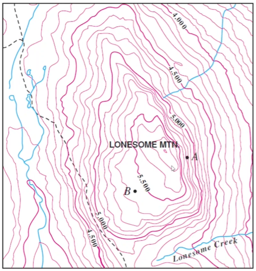
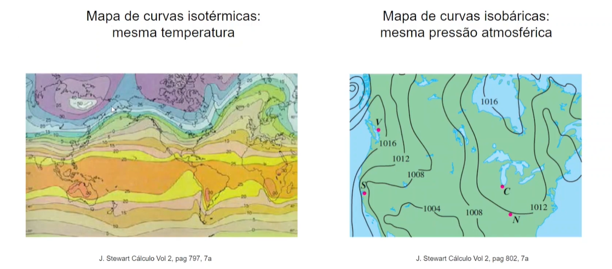
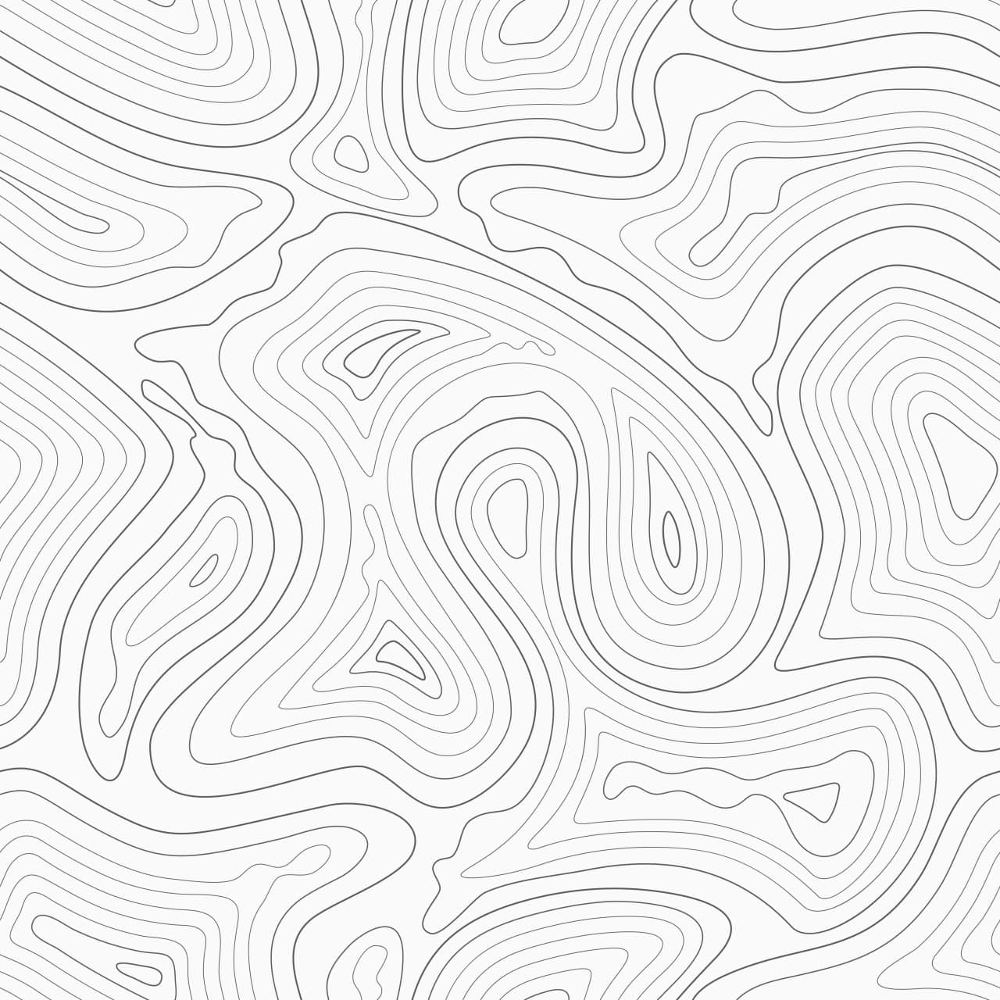

Mapa de contorno
Oi bom dia queridos, tudo bem? Nesse vídeo nós vamos aprender o que é um mapa de contorno de uma função dada e também farei um exemplo de
como como criá-lo, como desenhá-lo.Eu sou Begoña Alarcón e a disciplina é Cálculo 2B.
Vocês com certeza já viram mapas como esse daqui: mapas topográficos.
E essas linhas, essas curvas representam pontos que possuém a mesma altura.
Então veja, aqui essa curva da daqui são todos os pontos que estão a 4 mil pés de altura.
Eu falo pés porque essa imagem é americana. Aí, essa curva daqui são os pontos que estão a 4 mil e 500 pés de altura. Então aí já vemos que esse
mapa topográfico é de uma área que está aumentando em altura. Então pode ser uma montanha. Aqui temos uma montanha e aqui está o "biquinho", o topo da montanha.
Entenderemos o que significa isso daqui um pouco mais para frente. Para já, vamos pensar e projetar que essas curvas aqui representam o mesmo valor para a função altura.
Aí por exemplo: se eu quiser saber estimar aqui nesse ponto daqui qual seria a altura? Se por aqui temos 4 mil e 500 pés, então por aqui estar a
4 mil e 200 pés. Bem simples. Mas assim, esse mapa topgráfico não é o único mapa que vocês já viram do gênero.

Esse mapa daqui está medindo, cada linha
mede os pontos que tem a mesma temperatura média. Então essas curvas aqui são chamadas de isotérmas, de mesma temperatura.
E você consegue ler esse mapa do mesmo jeito que lemos o mapa anterior, só que agora no contexto das temperaturas. E esse daqui, a direita, cada linha
daqui, cada curva é uma isabárica. Está medindo, cada nível, são os pontos que tem a mesma pressão atmosférica. Então essa linha daqui são todos os pontos
que tem a mesma pressão atmosférica. O que todos esses três mapas que eu já apresentei têm em comum? Que eles são mapas de contorno. E os mapas de contorno são
formados por linhas das alturas outras isotérmicas, isobáricas e etc. E todas elas são curvas de nível. E o que o mapa de contorno tem de especial? As curvas
de nível representam o conjunto de pontos do domínio de uma função dada que possuem o mesmo valor C. Ou seja, são todos os pontos do domínio da função que tem
a mesma altura, a mesma pressão, ou a mesma tempera ou o que você estiver medindo nesse momento, o que estiver medindo a F(x,y) em particular. Esse conjunto é
bem definido com F(x,y) = C. São todos os pontos no domínio da F que possuem a mesma imagem, o mesmo valor na imagem. Então C, esse número C mora aonde? Ele
pertence ao conjunto imagem da função F. O valor de C é chamado de nível da curva. Então lembre que as curvas de nível moram no domínio da função e que o nível
C mora no conjunto imagem. Nesse caso agora um número, mas mais para frente ele poder ser um vetor.
 Se eu apresentasse esse mapa topográfico para você, você encararia
subir a montanha? Você pegaria a sua mochila e as suas botas e diria: "vou subir a montanha!" Vá devagar. Porque com esse mapa aqui, você não sabe... está faltando
as alturas. Você não sabe se esses pontos aqui são topos da montanha ou são lagos, podem ser um poço. Ai em vez ir para cima, aumentando a altura, pode estar
diminuindo. E esse daó vai ser um vale, ou alguma outra coisa com altura inferior. Então uma coisa que vocês tem que fixar nas suas cabeças é que uma curva de nível
sem nível não é curva de nível. Pois está faltando informação. Ai você precisa colocar aqui em cada linha o nível ou aqui do lado fazer uma escala e colocar um texto
interpretando o nível de cada curva. Seja como for, dentro do mapa ou fora, a informação do nível é extremamente necessária. UMA CURVA DE NÍVEL SEM NÍVEL, NÃO É UMA
CURVA DE NÍVEL. É uma curva, mas não possui nível. Ela não é de nível, está faltando informação.
Atividades
Questão 1:
A profundidade de um poço mineiro vem dada pela equação *(f(x,y)=-\sqrt(4-x^2-y^2))*.
Esboce o mapa de contorno e identifique o nível de profundidade do ponto *((1/\sqrt(2),1/\sqrt(2)))*
onde foi encontrado mineral valioso.
Resolução em vídeo:
Questão 2:
Esboce com o Geogebra o mapa de contorno da função *(f(x,y)=\epsilon^{-x^2-y^2})*. Identifique com uma cor diferente a curva de nível que passa pelo ponto (1,1). Esboce o mapa de
contorno junto com o gráfico da função em uma janela de visualização 3D. Observe como as curvas de nível moram no domínio. O nível é um valor da imagem da função. Cada curva é a projeção no
plano xy da interseção do gráfico da função com o plano z=k.
Botão: Tutorial Geogebra
Solução (escondida, aparece ao clicar na palavra Solução). Copiar a solução do Exemplo 3.5.1 d) pag 6 Cap Funções reais de várias variáveis da apostila da Denise. f(x,y)=exp(-x^2-y^2). Eu farei o
applet para você colocar o link.
Questão 3:
Nos dois primeiros games abaixo você terá que combinar os gráficos com as equações. Verificar os gráficos do que estamos a desenhar antes de desenhar pode parecer tarefa difícil do início. Mas
com o tempo vemos que é uma tarefa extremamente fundamental em Cálculo 2B. Aqui saber os gráficos se torna tão importante quanto saber as resolver as equações.
Para resolver o game abaixo basta arrastar os gráficos e colocá-los nos quadrados correspondentes. Ao final é necessário enviar as respostas para a correção da atividade.
Caderno base da matéria
Atividades
Questionário
Esse é um questionário de múltipla escolha. Logo selecione a resposta marcando ao lado. Ao final clique em obter resultado para a correção das respostas enviadas.